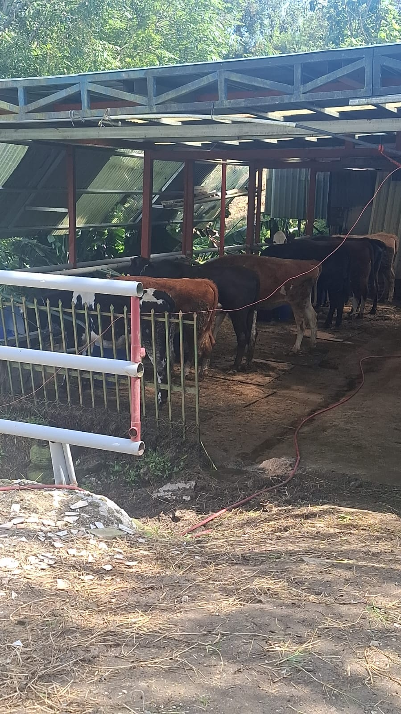
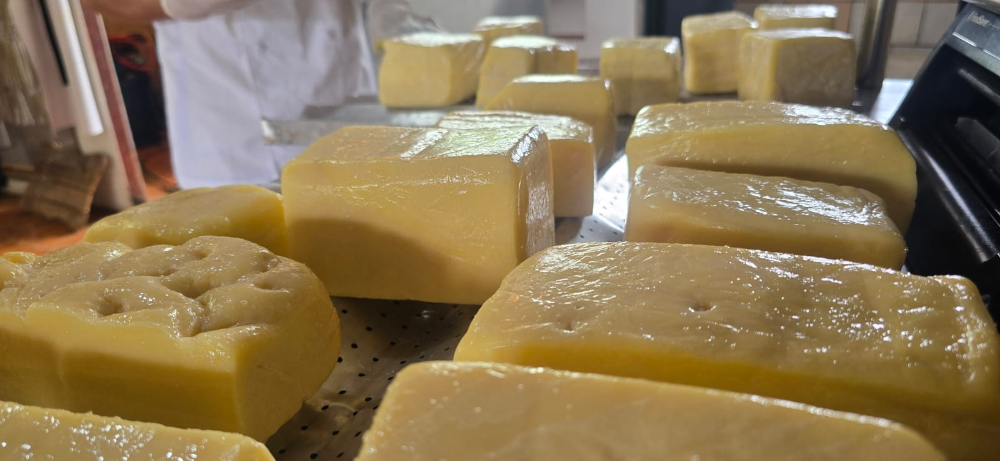
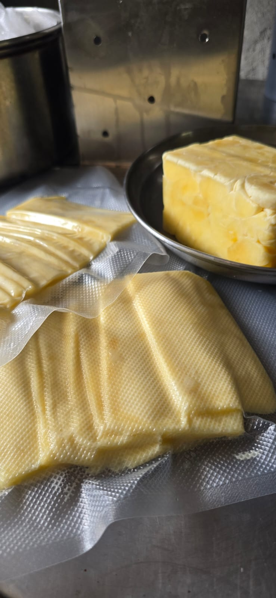
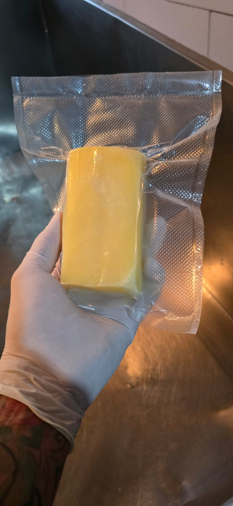
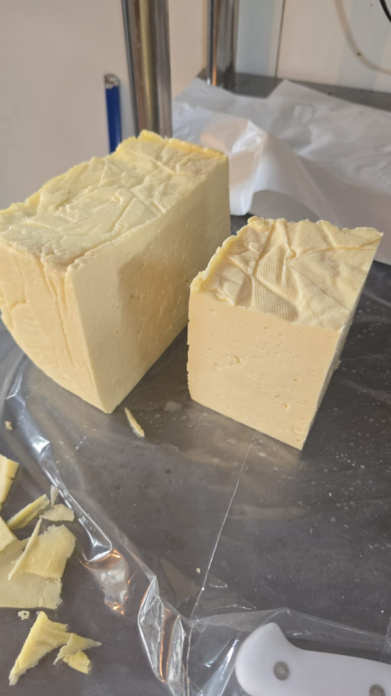
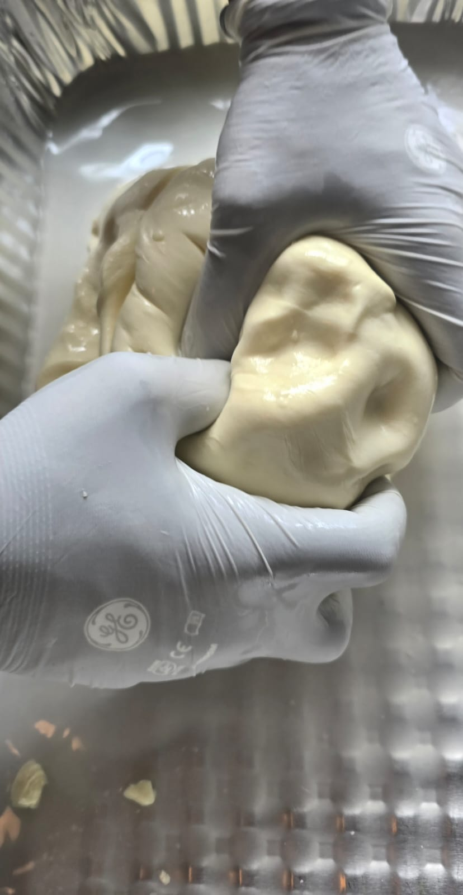

1. Nuestras vacas
Lo que producimos

Nuestros quesos
Elaborados con leche fresca de nuestro propio hato, sin conservantes ni aditivos artificiales.

Mozzarella
Suave, elástica y perfecta para pizzas, ensaladas y platillos calientes. Elaborada a mano.
Palmito
Textura fibrosa y sabor suave. El queso más costarricense, ideal para chorreadas y gallos.

Pizzero
Alto poder de fusión, sabor intenso al calor. Especialmente formulado para pizzas y gratinados.

Semiduro
Curado con paciencia, textura firme y sabor pronunciado. Ideal para tablas de quesos.

Tierno
Fresco, suave y cremoso. El favorito del desayuno tico, perfecto con pinto y tortillas.

Cremoso
Textura suave y untuosa, sabor delicado. Versátil para untar, cocinar o disfrutar solo.